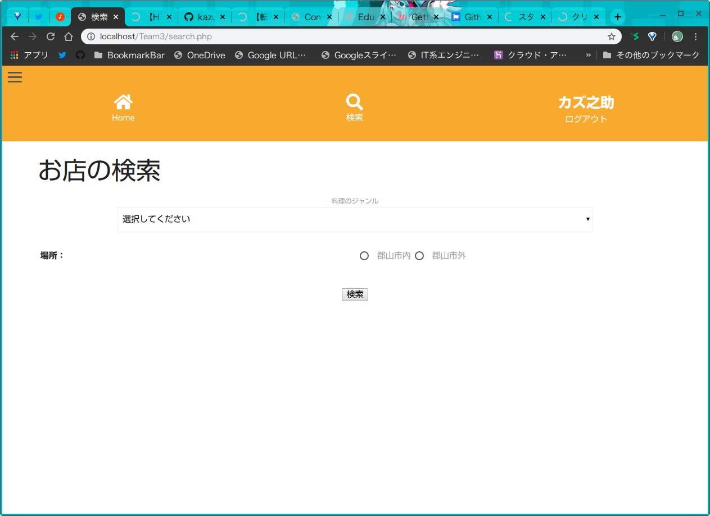
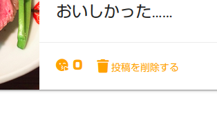

|
↑トップ画面 ↑検索画面 |
食べ○グMySQL Team3
サークル内の学びを促進させる何か……？今回の合宿は動的なWebサイトをチームでつくるというものだった。テーマは「サークル内の学びを促進させる何か」である。 最初は「過去問とかの共有サイトとかあるといいよね〜」とか話していたが、これだと他の班とアイデアがかぶりそうだ。 そこで、一度テーマから離れて「何があったら便利になる？」というテーマでブレインストーミングを行った。すると、「おいしいお店の紹介サイト」や 「インスタ(直球)」、「ブラック研究室を避けるための情報共有サイト」など色々な案が出てきた。そこで、チームで話合い一番テーマに 検索なのに店名で検索ができない！？シンプルにするため、店名での検索機能は省いた。利用シーンを考慮すると店名検索は使用しないからである。検索条件は
投稿に愛を！Love機能！投稿に「Love！」をつけることができる。当時はAjaxの存在すら知らなかったため、小規模なPHPによってDBの値を書き換える実装をした。↑他ユーザの投稿  ↑自分の投稿 |